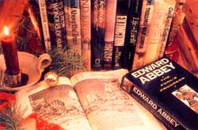
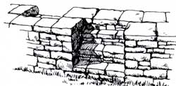
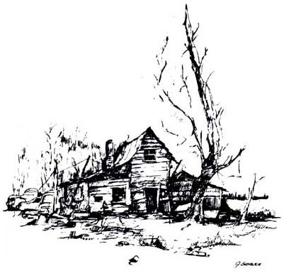
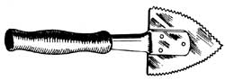
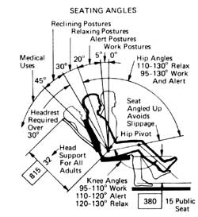
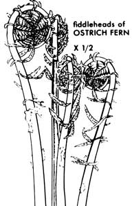

A Christmas reading (and giving) list
WINTER, PRECISELY BECAUSE OF, RATHER THAN IN spite of, its long evenings and uninspiring weather, is a rewarding time for frustrated bibliophiles, for this is the season when restless, housebound folk have the time to catch up on their reading. Reading about what? Well, perhaps about all of the other things they'd be doing were it any season but winter.
In that spirit, and with the holidays drawing nigh, the editors and staff of Mother Earth News have put together for your reading and gift-giving pleasure a compilation of our own personal favorite books-some useful in the pursuit of a rewarding country lifestyle, others merely exceptionally good reads. Our hope is that, from the descriptions of works that we as individuals most admire, you'll find something to brighten those gray December days and enlighten those long winter's eves-for yourself or for a loved one.
TERRY KRAUTWURST
Senior Editor
It seems that nearly everybody's dream these crowded and hectic days is to buy a few acres of country land and make their escape-either permanently or whenever time allows. Malcolm Argali's Earth Manual. How to Work on Wild Land Without Taming It (revised edition, 1985, Heyday Bks., 224 pages, $12.95 paperback) tells us how to take care of our land and how to heal any sores or scars imposed by previous owners. There's good, sound, dear advice on simple, low-cost, low-impact, hand-tool-only methods for stopping and preventing erosion; treating injured trees; planting, pruning, and propagating trees and shrubs; attracting and protecting wildlife; building and maintaining trails; and a whole lot more-all illustrated with clear, interesting line drawings. The author's style is friendly and casual, and the philosophy Margolin holds to is simple: Work with your land, not against it.
From our easy chairs to yours: 30 good reads for those long winter nights
Work with your Land not Against it.
In 1904, at the age of 42, a man named Horace Kephart-father of six, scholar, translator of Dante's La Vita, and for 13 years head of the prestigious Saint Louis Mercantile Library-up and shucked it all and fled to a little shack on a fork of Hazel Creek deep in the then-remote Great Smoky Mountains. Kephart spent the next couple of years nestled in his hideaway writing Camping and Woodcraft. A Handbook for Vacation Campers and for Travelers in the Wilderness (1988, Univ. of Tenn. Pr., 912 pages, $22.95 library bound or $10.95 paperback), a book still often referred to as "the bible of outdoorsmen," and justifiably so. The book is, in fact, Bible-like: pocket-Bible-size and Bible-thick, and almost incomprehensibly comprehensive. Never mind the discussions of now-obsolete packboards and heavy canvas tents and such; Kephart's advice on pathfinding and knot tying and camp cooking and axmanship and firemaking (and, and, and) rings as true and useful as ever. Furthermore, Kephart is a joy to read. He quotes from Chaucer, Shakespeare, da Vinci. He writes with wit, pithiness, class, and great attention to detail. This book is all its title proclaims and more-fantasy and adventure, autobiography and philosophy, history and humor.
FROM THE EARTH MANUAL BY MALCOLM MARGOLIN COPYRIGHT © 1975 A SAN FRANCISCO BOOK CO., SAN FRANCISCO, CA DRAWING BY MICHAEL HARNEY
Western Editor
In my notoriously opinionated opinion, no country home library is complete without a copy of Bradford Angier's One Acre and Security. How To Live Off the Earth Without Ruining It (1973, Random Hse., Inc., $4.95 paperback)-a veritable encyclopedia of country-living skills for the seriously selfsufficient, and a rich source of encouragement and vicarious entertainment for easy-chair hopefuls.
While it's no substitute for a fat stash of Mother Earth News back issues, and so very many subjects are covered that most get only superficial, and a few even misinformed, treatment, One Acre and Security is largely accurate and is guaranteed to get you fired up for action.
Were my little Rocky Mountain cabin home burning down, one book I'd risk life and limb to rescue is my autographed copy of Edward Abbey's Desert Solitaire. (Several versions are available, from a 1985, 320-page paperback Ballantine edition for a paltry $3.50 to an exquisite 1988, 255-page illustrated hardbound from the University of Arizona Press for $24.95.) Why should an autobiographical account of a desert rat be tops on a mountain mole's reading list? Be cause Edward Abbey is among my favorite writers and Desert Solitaire is not only the best of his score or so books, but arguably the finest work of nonfiction literature written in this century. And because Desert Solitaire is about a great deal more than the Utah desert and canyon country. As David Quamman commented in a recent Outside magazine tribute to Abbey: "Desert Solitaire begins on a first day of April ... and ends in October, and in between is encompassed a world and a life and a vision. . . . My message to you is . . . 'Trust me. Just read this thing.' "
If enough of my own country home library were left standing to justify a second dash into the flames, I'd go for more Abbey-probably his fat masterpiece, The Fool's Progress - plus any of A.B. Guthrie's six novels of the American westering movement, starting with his 1947 classic, The Big Sky, plus his environmental essay collection, Big Sky, Fair Land, and finally, Ernest To son Seton's four-volume classic, The Lives of Game Animals. They just don't make any more like Guthrie, Abbey, and Seton.
FROM DESERT SOLITAIRE BY EDWARD ABBEY. COPYRIGHT © McGRAW HILL. NY, NY, 1968 ILLUSTRATION BY PETER PARNALL
Senior Editor
Being an ardent craftsperson, I love the book Nature Crafts. Seasonal Projects from Natural Materials, by Mary Elizabeth Johnson and Katherine Pearson (1980, Oxmoor Hse., Inc., $19.95). Among the easy-to-follow instructions for dozens of crafts (including great ideas for Christmas decorations) are drying melon and citrus shells in wood ashes to form fine little boxes or containers, making pots from local clay, transforming twigs or straw into flowerpot containers, making luminarias from snowballs, and creating elegant flowers out of seashells. In their presentations of all these attractive projects, the authors make a point of altering the natural materials as little as possible, in order to better celebrate the earth's colors, shapes, and textures.
Architecturally, I find few things more enchanting than an old moss- or lichen-covered stone wall draped with ivy or climbing roses. Such structures lend an elegant antiquity to any home and will long outlast the builders. As John Vivian points out in his thorough and practical little book, Building Stone Walk (revised edition, 1979, Storey Communications, Inc., 112 pages, $6.95 paperback), a properly built fence made of easily split and worked sandstone or limestone can hold up for 10,000 or 12,000 years. Obviously, the construction of stone walls requires a strong back and a lot of energy. If you have those, Vivian's book will equip you with the knowhow to create these everlasting structures. It also tells you how to use rocks to stop erosion, create a better stream habitat, or build a cairn-type bath to attract the local birds.
As "forever" as stone is, the written word is even more enduring-at least when the writer is William Shakespeare. So, without a doubt, my one book of choice-if, heaven forbid, I ever had to choose just one book-would be The Complete Works of William Shakespeare. There are literally dozens of versions, and prices, to choose from. As Philario, says in Cymbeline, " I beseech you all, be better known to this gentleman; whom I commend to you as a noble friend of mine."
FROM BUILDINGS STONE WALLS BY VIVIAN PUBLISHED BY GARDEN WAY PUBLISHING/STOREY COMMUNICATIONS, INC.,POWNALL VT.
Food Editor
Cookbooks have about the same shelf life as yogurt. In a market where preparation methods and even foods themselves are often just short-lived fads (remember mesquite? remember quiche?), last year's best-seller is this year's cliche. But trendiness isn't the only reason for rapid decline. An astonishing number of attractive, vigorously marketed, well-reviewed cookbooks are interesting to browse through but disappointing to cook from. A noteworthy exception is lane Brody's Good Food Book (1987, Bantam, $12.95). The first third of this 700-page paperback discusses recent trends in nutrition, and if you nodded off during the 1980s, you can catch up here. Brody makes the case for what has become dogma-Americans eat too much protein, fat, sugar, and salt, and too few complex carbohydrates-and provides nutritional, cultural, and historical sketches of the major starches. But most useful are the recipes-350 of them. They're a diverse and delicious lot, neither complicated nor time-consuming, ranging from appetizers to desserts and drawing from a variety of ethnic traditions. They're nutritionally sound, and they can be trusted.
Some of the best books about food include no recipes at all. For example, anthropologist Margaret Visser says that if we serve a dinner of corn with butter and salt, chicken with rice, lettuce with olive oil and lemon, and ice cream, "we should be aware that our meal is almost totally female in connotation. Corn is the American Indian 'mother and nourisher'; chicken (pale meat, no red blood, and little fat in evidence) is for us a typically 'female' choice; rice, a delicate grain-especially when it is 'fluffy,' as we like it white like chicken, and in its mythical origins ... a girl-child; lettuce is light and unfattening, but also cold, green, and (therefore) female; lemons nippled, olive oil virgin, ice cream cold, milky, and served in definitely womanly, rounded shapes. Salt is the one exception, but even it is neuter end not masculine; butter from cream is again female."
That's the kind of thing that can happen when an anthropologist gets loose in the kitchen. In Much Depends on Dinner (1988, Macmillan, $10.95), Visser examines the history, mythology, production, and cultural, meanings of the nine foods listed above-and demonstrates that it can be more interesting to read about food than to eat it.
FROM MUCH DEPENDS ON DINNER BY MARGARET VISSER. COPYRIGHT © MACMILAN PUBLISHING CO., COLLIER BOOKS, 1986, COVER DESIGN BY RICHARD PRACHER.
Research Coordinator
Were I to be banished to the wilderness, any wilderness, with just a couple of books, I'd be sure that one of the two was Medicine for Mountaineering, third edition, edited by James A. Wilkerson, M.D. (1985, The Mountaineers Bks., 376 pages, $11.95 paperback). The text, while written by physicians who are active mountain climbers for an audience who shares the same interest, can serve any intelligent individual who deals with isolation in terms of days, weeks' or even seasons. The book covers the basics (diagnoses, therapies, and precautionary measures such as immunization and water purification), then details the treatment of a number of environmental and physical injuries. A full third of the text addresses "nontraumatic diseases" of the body's various systems-pneumonia, dysentery, urinary infections, and sinusitis are but a few-and dis cusses the nature of infections and allergies. Finally, there are five detailed appendixes dealing with medications, administration, medical supplies, legal concerns, and terminology.
For my second choice, I'd consider The Best Of Edward Abbey from Sierra Club Books, the 1944 edition of the Boy Scout Field-book, Kerouac's Dharma Bums, Giono's The Man who Planted Trees, and Ernest Callenbach's regionally elitist upbraiding, Ecotopia. But if limited to just one additional volume, I'd probably have to go with John McPhee's The Pine Barrens (1968, Farrar, Straus & Giroux, Inc., 157 pages, $11.95 hardcover or $5.95 paperback). This is a book about one of the least densely populated areas of the United States, located, ironically, in New Jersey, the most densely populated state in the union. But the book is more than just a history of the thousand or so square miles of sandy pine forest that make up the region; it's a privileged look at the people who have made it their home for generations. Told in great part through the comments of Hog Wallow resident Fred Brown and other locals, it ambles pleasantly from the 18th century to the present. The dialogue is often anachronistic, the vernacular so unspoiled by the outside world that it has hardly changed. The Pine Barrens holds a special fascination for me because, having lived on the region's periphery at about the same time the book was published (some 20 years ago), I appreciate the value of a place that hasn't "progressed" with progress.
ILLUSTRATION FROM THE PINE BARRENS BY JHON MCPHEE, COPYRIGHT © 1967, 1968 BY JHON MCPHEE REPRINTED BY PERMISSION OF FARRAR, STAURUS AND GIROUX, INC.
Assistant Editor
There's nothing more down-to-earth (and little that's more satisfying) than growing one's own food. So when preparing for the winter in an isolated homestead, I'll tote in a gardening book. The Encyclopedia of Organic Gardening (1978, Rodale Pr., Inc., $34.95 hardbound) is the most thorough gardening book I know of Along with acres of how-to on rearing food crops, it covers raising turkeys, stopping soil erosion, planting to attract wild birds, starting cuttings, choosing shrubs, combating lightning, and a whole lot more. From Abelia to Zygopetalum, there are 1,236 pages of no-frills, hands-on text in this one.
Since I suffer from "brown thumb" (the incurable talent for making gardening mistakes), I'd also grab a copy of The Healthy Garden Handbook (1989, Simon & Schuster, Inc., $22.95 hardbound or $11.95 paperback). This grower's diagnostic tool, put together by the organic gardening staff here at Mother Earth News, thoroughly analyzes common gardening mistakes and tells you how to correct them. If you've messed up on your peas and carrots as often as I have, you'll appreciate the detective help this handsome book provides.
A Sand County Almanac. With Other Essays on Conservation from Round River (1966, Oxford Univ. Pr., $17.95; or $3.50 in paperback from Ballantine), Aldo Leopold's 295-page classic, moves from intimate nature sketches to deep ecological reflection. It starts gently ("Each year, after the midwinter blizzards, there comes a night of thaw when the tinkle of dripping water is heard in the land.") and ends philosophically ("Recreational development is a job not of building roads into lovely country, but of building receptivity into the still unlovely human mind."). I could spend an entire winter cherishing the poetry of those magical nature sketches that march through the seasons at Leopold's Wisconsin-marsh farm ... mulling over the evocative travel-reflection essays written from all over outdoor America ... slowly gnawing away on the meanings of hardhitting "think pieces" like "The Land Ethic" and "Conservation Esthetic." Yes, I could read Leopold the entire winter-and never become bored.
FROM A SAND COUNTRY ALMANAC BY ALDO LEOPOLD COPYRIGHT © OXFORD UNIVERSITY PRESS. INC., NY, NY, 1966 ILLUSTRATION BY CHARLES W. SCHWARTZ
Chief of Research
I was raised in the city in a household where when repairs were needed, a carpenter, plumber, or painter was called. These days I live in a century-old farmhouse, enjoy working with my hands, and am possessed of a curiosity that has overcome my total lack of do-it-yourself experience and led me to discover a book that's the next best thing to the rare knowledgeable and patient hardware-store salesperson. It's called The Complete, Illustrated Guide to Everything Sold in Hardware Stores, by Tom Philbin and Steve Ettlinger (1988, Macmillan, 352 pages, $24.95). Nothing is excluded: hand and power tools; general hardware and materials; paints, stains, and finishes; wood and wood products; and treatments for walls, floors, ceilings, doors, and windows. Plumbing, electrical, and masonry questions are answered as well, and there's even a chapter on safety equipment. Confused? Consult the well-organized table of contents, scout the detailed index, or peruse the large, clear illustrations. Then proceed to the hardware store as if you know what you're talking about-because you will!
Each time I reread a portion of Elinore Pruitt Stewart's Letters of a Woman Homesteader (1988, Houghton Mifflin Co., 287 pages, $7.95 paperback), I feel a special kind of intimacy. Dissatisfied with her life as a laundress in Denver, this woman yearned for the expansiveness of open territory, wanted to be her own boss, and longed for her own land. In 1909, in company with her young daughter, she set out for Wyoming, intent on homesteading. Through her eloquent letters, Elinore shares with the reader her never-ending delight in fields of flowers, howling coyotes, and burning sunsets. There's also her humorous appreciation of the idiosyncrasies of her fellow ranchers: the hermit, Zebulon Pike; the twins, Sedalia and Regalia Lane; and others equally eccentric. Elinore's frontier life held endless amounts of work, but these accounts don't wallow in self-pity. This woman, realistic and plainspoken, loved her freedom and didn't try to contain her passion for life. The movie Heartland, Letters of a Woman Homesteader was taken from the Stewart letters.
FROM COMPLETE ILLUSTRATED GUIDE TO EVERYTHING SOLID IN HARDWARE STORES BY TOM PHILBIN AND STEVE ETTLINGER COPYRIGHT ©
MACMILLAN PUBLISHING CO., COLLIER BOOKS. 1988 ILLUSTRATION BY ROBERT STRIMBAN.
Senior Editor
If I were marooned on a desert island with an unlimited charge account at the local building-materials supply store, I'd want a copy of Architectural Graphic Standards. Not because I fancy myself a budding architect, but because A GS is the single best source of accessible information on habitation. From chairs to retaining walls to rafter tables to electrical specifications, AGS covers it all. Current versions-it's revised frequently by the American Institute of Architects' staff and published by John Wiley & Sons, Inc.-are pricey (hardback, $150), but you can often pick up remaindered older versions for much less.
When I grew tired of sawing and hammering on my desert-isle castle, I'd want to relax with pleasant, stimulating, and enduring reading. I could try forever to read Joyce's Ulysses without risk of finishing, but I'd find the variety and frustration level much more acceptable in The Oxford Anthology of English Literature: Major Authors Edition, Volume 2, Blake to Auden, edited by Frank Kermode et al (1975, Oxford Univ. Pr., Inc., $18.95 paperback). Volume 2 excludes early favorites such as Chaucer, Shakespeare, and Johnson-a hard trio to give up-but having Blake, Wordsworth, Coleridge, Keats, Hopkins, Yeats, and Eliot close to hand is fair compensation. Best of all, my used copy cost $7 at a college bookstore.
FROM ARCHITECTURAL GRAPHIC STANDARDS, 8TH EDITION. BY C.G. RAMSEY, ET.AT COPYRIGHT © 1988, JHON WILEY & SONS. INC. REPRINTED BY PERMISSION OF THE PUBLISHER
Editor in Chief
Two books. Two? Might as well ask me to pick one sense, select a single limb, decide between a cold beer at the end of a hard day and a mug of hot coffee at the beginning of one. I'm an addictive-personality sort of reader, the type that keeps at least four books going at a time in random locations (on the bedside table, next to the commode, on the kitchen counter ... ); my tastes tend toward the omnivorous. I can happily lose myself in the poetry of Gary Snyder, the modem horror of Stephen King, the mysteries of John D. MacDonald, or the essays of Peter Matthiessen. But limit myself, even in my imagination, to two volumes? Well, here goes.
Since I spend as much time as possible in the bush, and since-in this neck of the woods-that bush consists mainly of Southern deciduous forest, I'd have to hold on to my copy of Lee Peterson's A Field Guide to Eastern Edible Wild Plants (1984, Houghton Mifflin, $10.95 paperback). I've prepared any number of meals using foraged plants over the years, from main courses to desserts to wines, and I've never found a more reliable identification tool than Peterson's volume. He uses quality color photographs in addition to the more common (and commonly almost useless) line drawings, and keys each plant to the types of preparation that suit it best. With Lee's guide along, I'll know that, regardless of my shortage of reading material, I'll always be able to eat.
Then again, I don't plan on running out of interesting reading for a decade or so, because my second choice will be a much dog-eared and annotated copy of Russell Hoban's Riddley Walker (1982, Washington Square Pr., Inc., $6.95, 240-page paperback). I've read Riddley some six times over the past 10 years, and I don't imagine I'll succeed in milking it dry in another mere decade. This tale of post-apocalypse Earth, upon which small tribes of hunter-gatherers are slowly being supplanted by a newly reborn agriculture (the "formers" . . . those that bring form, those that farm), concerns-among other things-an effort on the part of some tribal politicians (they ring more truly than the news from the most recent summit conference) who are trying to rediscover the secret of producing gunpowder. In the course of presenting his story, Hoban recreates an English language that is so appropriate and believable that it's a joy to decipher. Moreover, the book is simply fun to read and is packed with environmental/political/sociological wisdom. Just the thing to feed the mind while the palate savors a Chenopodium album frittata.
ILLUSTRATION BY LEE PETERSON AND ROGER TORY PETERSON FROM A FIELD GUIDE TO WILD EDIBLE PLANTS BY LEE PETERSON, PUBLISHED BY HOUGHTON MIFFLIN CO., BOSTON COPYRIGHT © 1977 BY LEE PETERSON REPRINTED BY PERMISSION
|
 BRANSON REYNOLDS |
|
|
|
 |
|
 |
|
|
 |
 |
|
 |
|
|